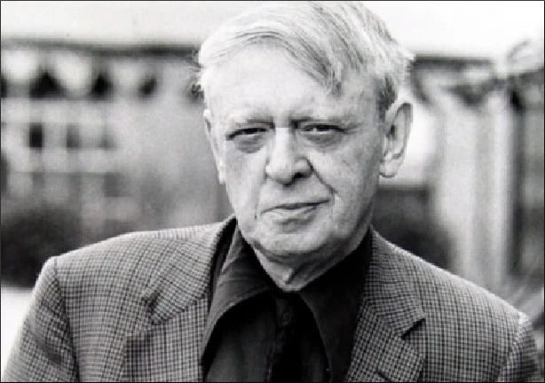

ANTHONY BURGESS

Biyografi
- John Burgess Wilson, better known by his pen name Anthony Burgess, was a British novelist, poet, composer, critic, linguist, and translator.
- He is best known for his dystopian novel “A Clockwork Orange.”
- He was born on February 25, 1917, in Manchester, England, and died on November 22, 1993, in London. He initially worked as a lecturer at the University of Birmingham and later as an educator in Malaya. From the mid-1950s onward, he focused increasingly on his writing career.
- Between 1954 and 1959, during his time teaching at schools in Malaya and Borneo, he wrote the Malayan Trilogy (Time for a Tiger, The Enemy in the Blanket, Beds in the East).
- In 1959, Burgess was diagnosed with an inoperable brain tumor and was given less than a year to live. Determined to provide for his first wife, Lynne, he wrote five and a half novels within 12 months—only to later discover that the diagnosis had been incorrect. Nevertheless, he had already become a recognized author. He went on to write more than 50 novels and books.
Contributions
- As a literary critic, Burgess wrote works on James Joyce such as Here Comes Everybody and Joysprick, as well as critical essays on Shakespeare, Hemingway, and D. H. Lawrence. He also conducted studies in the field of linguistics.
- He composed more than 250 musical works, demonstrating creativity across a wide range that included symphonies, operas, and music for theater and film.
- He wrote screenplays for television and film projects, including productions such as Jesus of Nazareth and Moses the Lawgiver.
Main Themes and Influences
- His works prominently feature themes such as human free will, morality, the alienation of the artist from society, and the impact of totalitarian systems on the individual.
- With the Malayan Trilogy, he secured an important place in postcolonial literature and established a notable authorship within postcolonial discourse.